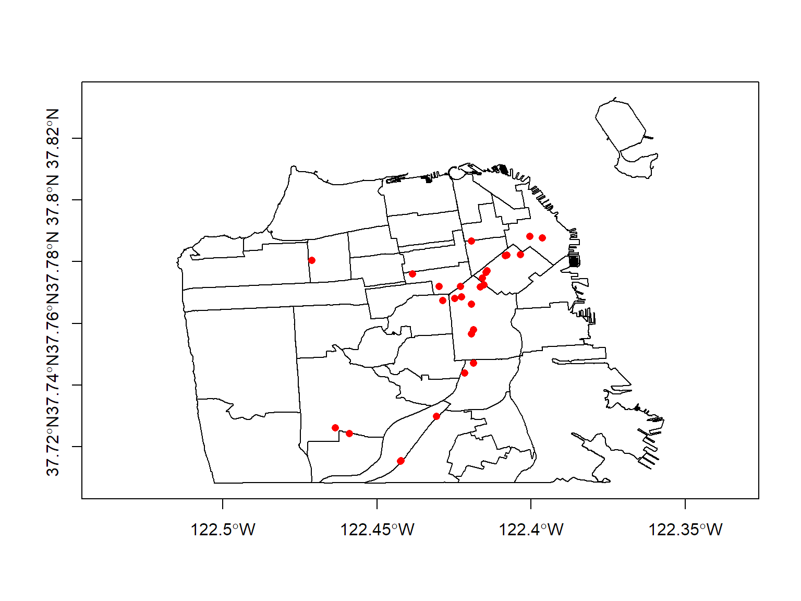
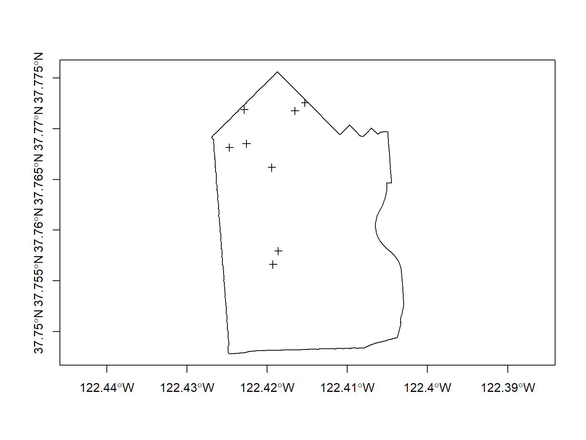

Spatial Queries
Spatial Queries: Selecting features based on their location.
Absolute location - based on their coordinate values
Relative location - based on proximity to other features, including:
Attribute query - select features based on their attribute values
Spatial join - Spatial query followed by copying the attributes of selected features (also called Spatial Enrichment)
returns a numeric vector of length equal to the number of points; the number is the index (number) of the polygon of y in which a point falls; NA denotes the point does not fall in a polygon; if a point falls in multiple polygons, the last polygon is recorded.
equal to the previous method, except that an argument fn=xxx is allowed, e.g. fn = mean which will then report a data.frame with the mean attribute values of the x points falling in each polygon (set) of y
returns a data.frame of the second argument with row entries corresponding to the first argument
returns the polygon index of points in y; if x is a SpatialPolygonsDataFrame, a data.frame with rows from x corresponding to points in y is returned.
and several others...
You have to read the details closely.
If this makes your head hurt, you're not alone.
Remember that a SpatialPoints and SpatialPointsDataFrame are two different object types.
You can drop the dataframe of any *Spatial** object with the geometry() function
library(rgdal)
sfnb_ll <- readOGR("../exercises/data", "sf_neighborhoods", verbose=FALSE)
fn <- "../exercises/data/sf_permitted_cannabis_dispensaries_2014.kml"
sfpot_ll <- readOGR(fn, "Cannabis Dispensaries 2014", verbose=FALSE)
sfpot_ll <- spTransform(sfpot_ll, sfnb_ll@proj4string)
plot(sfnb_ll, axes=T, asp=1)
plot(sfpot_ll, add=T, col="red", pch=16)
sfpot_nb_idx <- over(geometry(sfpot_ll), geometry(sfnb_ll))
sfpot_nb_str <- sfnb_ll@data$nhood[sfpot_nb_idx]
sfpot_nb_str <- as.character(sfpot_nb_str) ## change factor to a character
table(sfpot_nb_str)## sfpot_nb_str
## Bernal Heights Castro/Upper Market
## 2 1
## Financial District/South Beach Hayes Valley
## 2 2
## Inner Richmond Mission
## 1 8
## Oceanview/Merced/Ingleside Outer Mission
## 1 3
## South of Market Tenderloin
## 6 1
## West of Twin Peaks
## 1To do a Spatial Query based on contains or overlays relationship, can you use the traditional [square bracket] notation.
Syntax: my_spatial_points[rows, ]
For the rows expression provide the features you want to use for selection.
Example: select the dispensaries that fall in the Mission neighborhood.
msn_bnd <- sfnb_ll[sfnb_ll$nhood=="Mission",]
msnpot_pnts <- sfpot_ll[msn_bnd, ]
nrow(msnpot_pnts)## [1] 8plot(msn_bnd, axes=TRUE)
plot(msnpot_pnts, add=TRUE)
The rgeos package contains a number of spatial query functions, including:
gContains()
gCovers()
gEquals()
gIntersects()
gOverlaps()
gTouches()
gWithinDistance()
Many of these use the byid argument to control whether the test is performed for individual features or the spatial layer as a whole.
aa Like the over() function, you have to read the help page carefully.
Example: Find the cannabis dispensary in the Mission neighborhood using the gContains() function.
library(rgeos)
x_matrix <- gContains(msn_bnd, sfpot_ll, byid=c(F,T))
x_vec <- x_matrix[,1] ## gContains returns a matrix, in this case just one column
table(x_vec)## x_vec
## FALSE TRUE
## 20 8plot(msn_bnd, axes=TRUE)
plot(sfpot_ll[x_vec,], add=TRUE, col="green")extracting pixel values from raster data